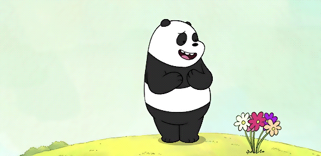
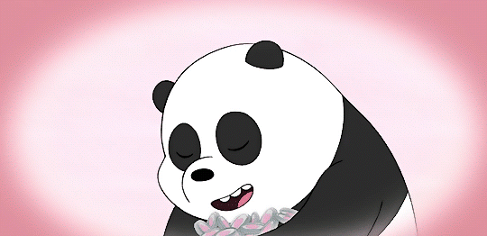

Espero que muy bien :)
Como te mencioné al principio, no soy fan de seguir el mismo patrón que los demás; prefiero destacar y ser diferente. Este pequeño gesto lo quise hacer de una manera única: una especie de carta, pero virtual. Considerando que ambos compartimos el mundo de las TIC´s, me pareció una idea genial fusionar la tecnología con buenas intenciones. Esta página está diseñada especialmente para ti.
Por supuesto, podría ir mejorando con el tiempo, pero en este momento quise mantenerlo sencillo. No quise exagerar, simplemente crear algo auténtico. Espero que disfrutes de este pequeño rincón digital
Espero que te haya gustado este pequeño detalle. El color rosa es porque sé que te gusta el color rosa, y Panda porque te gusta y te identificas con él. Por eso también escogí esa contraseña, para que solo tú puedas ver todo esto. (Ahora si, no me equivoqué entre Polar 🐻❄️ y Panda 🐼).
Un pequeño Poema:
Eres como una rosa en el jardín de la vida, tu belleza auténtica, tan clara y sin medida. No sigues las corrientes, no imitas a otras flores, eres única en tu esencia, la más pura de las amores.
Tus pétalos reflejan la luz de tu ser, una luz que ilumina, que hace renacer. No buscas comparaciones, no persigues vanidad, tu autenticidad es una joya, una verdadera realidad.
En cada gesto, en cada palabra que pronuncias, se revela la verdad de tus emociones distintas. Eres una obra maestra, una creación divina, una mujer auténtica, simplemente genuina.
Así, en el jardín de la vida, destacas con esplendor, una flor única, radiante, de incomparable valor. Tu autenticidad es tu mayor virtud, y en su resplandor, encuentro mi gratitud.
Algo sencillo, tal vez, pero todo lo hice con buena intención, Gloria. Espero que te haya gustado o, en el mejor de los casos, te haya encantado.😊❤️
Y recuerda: ঈশ্বরই ভালবাসা 👀✨